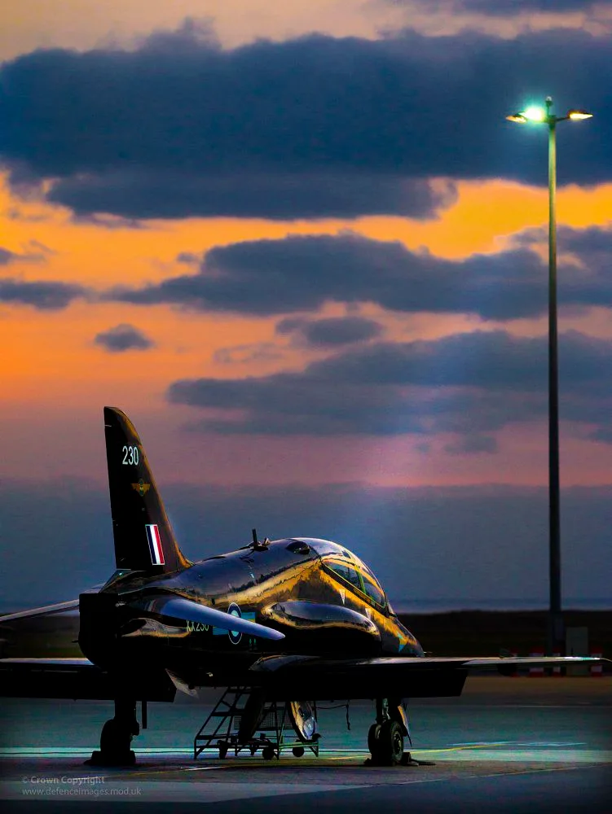
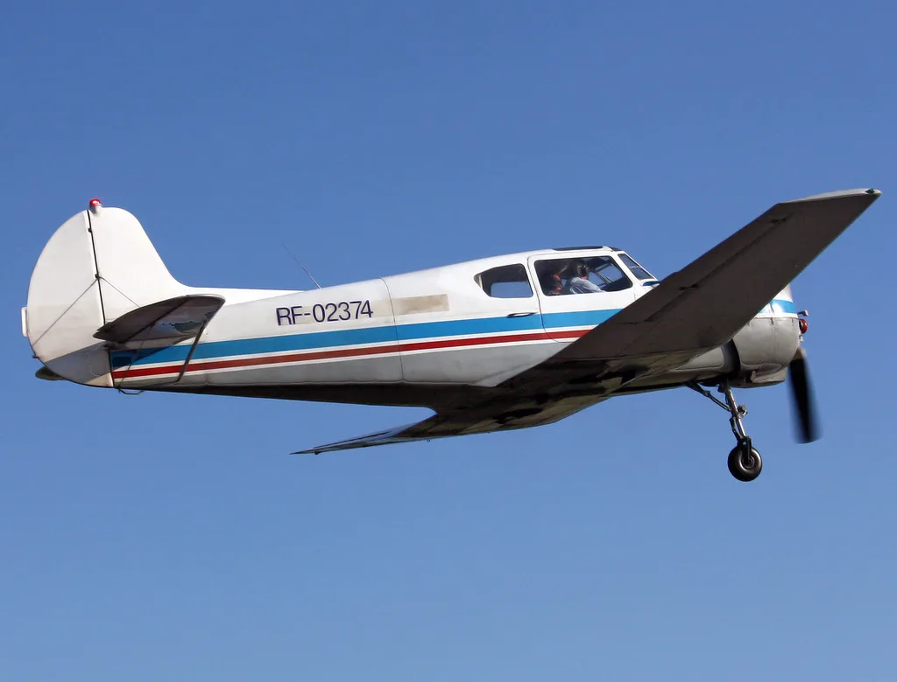

지난 9월 1일 오전 9시17분쯤 경남 사천 공군기지 인근 상공에서 공군 제3훈련비행단 소속 KT-1 훈련기 2대가 공중에서 충돌하는 사고가 있었던 사실이 두 달 가까이 지난 뒤에야 외부에 알려졌다. 착륙을 시도하던 훈련기 1대의 날개가 다른 훈련기의 동체와 접촉하면서 벌어진 사고로, 당시 두 항공기 모두 비상착륙에 성공해 탑승 조종사들은 다치지 않았다. 훈련 비행 중 발생한 사고인 만큼 현장에서는 한동안 긴장감이 감돌았던 것으로 전해진다.
공군에 따르면 충돌 과정에서 훈련기 날개와 동체 일부가 파손됐지만, 두 기체 모두 정상적으로 비행을 이어가 안전하게 착륙한 것으로 전해졌다. 인명 피해가 없었다는 점에서 공군은 사고 발생 당시 별도의 언론 공지를 하지 않았다고 설명했다. 그러나 사고 발생일로부터 약 두 달이 지난 11월 1일에야 외부에 알려지면서, 늑장 공개 논란이 불거지고 있다. 그 사이 비행 훈련은 예정대로 계속 진행된 것으로 알려져, 사고 이후 안전 점검 절차가 제대로 작동했는지에 대한 의문도 함께 제기된다.

공군은 사고 원인에 대해 조종사들의 전방 주시가 미흡했던 것으로 파악했다고 밝혔다. 비행 훈련 과정에서 기본적인 거리 유지와 상호 식별 절차가 제대로 지켜지지 않았다는 의미로 해석된다. 공군은 사고와 관련된 관계자들을 문책위원회에 회부해 책임 소재를 가리는 절차를 진행 중인 것으로 알려졌다. 전방 주시 미흡이라는 원인은 숙련도나 통신 체계보다는 조종사 개개인의 주의력과 직결된 문제로, 비행 훈련 전반의 기본 절차 준수 여부를 되짚어봐야 한다는 지적으로 이어지고 있다.
이번 사고가 주목받는 또 다른 이유는 KT-1 훈련기가 과거에도 중대 사고를 낸 기종이라는 점이다. 약 4년 전에도 동일한 KT-1 기종이 관련된 사고로 탑승자 4명이 순직한 사례가 있었던 것으로 전해진다. 당시 사고 이후 안전 관리가 강화됐다는 평가가 있었던 만큼, 이번 공중충돌은 비행 훈련 현장의 안전 체계를 다시 점검해야 한다는 목소리로 이어지고 있다.
군 당국의 사고 공개 기준을 둘러싼 논란도 커지고 있다. 인명 피해가 없었다는 이유로 두 달 가까이 사고 사실 자체를 외부에 알리지 않은 것이 적절했는지를 두고 비판이 제기된다. 훈련기 동체와 날개가 파손될 정도의 충돌이었던 만큼 경미한 사고로 볼 수 없다는 지적과, 군의 정보 공개 원칙이 지나치게 자의적으로 운용되고 있다는 우려가 함께 나온다.

국회 국방 관련 상임위에서도 이번 사고의 뒤늦은 공개 경위와 안전관리 실태를 따져볼 필요가 있다는 지적이 나올 것으로 예상된다. 공군은 문책위원회 결과가 나오는 대로 재발 방지를 위한 후속 조치를 마련하겠다는 입장이지만, 훈련 비행의 안전성과 사고 공개 투명성을 둘러싼 논의는 한동안 이어질 전망이다. 조종사 양성 과정의 핵심 기종인 KT-1에서 반복적으로 안전 문제가 제기되는 만큼, 이번 사고가 훈련 체계 전반을 다시 들여다보는 계기가 될지 주목된다.